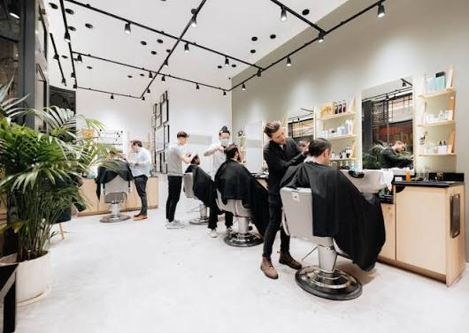

Precision
Every detail matters. From the first clipper pass to the final line-up, we take pride in precision.
NATAL'S BARBER SHOP
A modern barbershop with a respect for the craft, the community and the people who sit in our chairs.

OUR STORY
Natal's Barber Shop started with a simple idea: create a place where people could get a great haircut, have a good conversation and feel completely at home.
Inspired by the traditional neighbourhood barbershop and shaped by modern Johannesburg, Natal's brings classic barbering into a fresh, contemporary space.
Every cut is approached with patience and precision. Whether you want a clean skin fade, a classic cut, a detailed beard shape or the full Natal's Signature experience, our goal is always the same: make sure you leave looking and feeling your best.
WHAT WE BELIEVE
Every detail matters. From the first clipper pass to the final line-up, we take pride in precision.
Your haircut should fit you. We listen to what you want and help create a style that feels right.
A barber shop should feel welcoming. Good music, good conversation and a comfortable chair are all part of the experience.
Whether it's your first visit or your fiftieth, you should know exactly what to expect from Natal's.
THE TEAM
Skilled hands, individual styles and one shared passion for great barbering.

FOUNDER & MASTER BARBER
Natal founded the shop with a vision of bringing traditional barbering and modern Johannesburg style together under one roof.
Specialties: Classic Cuts, Skin Fades, Beard Grooming

SENIOR BARBER
Liam brings a modern approach to barbering, with an eye for clean fades, contemporary styles and precise finishing.
Specialties: Skin Fades, Modern Cuts, Styling

BARBER
Thabo is known for his attention to detail and relaxed approach, making every client feel comfortable in the chair.
Specialties: Textured Cuts, Kids Cuts, Beard Grooming

THE EXPERIENCE
We believe the best barber shops are more than places to get your hair cut. They're places to slow down, catch up and leave feeling refreshed.
That's the atmosphere we're building at Natal's. Relaxed, welcoming and focused on doing great work.
Book Your ChairWHY NATAL'S
Our team combines traditional barbering techniques with modern styles.
Every appointment is focused on quality, attention to detail and your individual style.
Conveniently located on Rivonia Road in Sandton, Johannesburg.
YOUR NEXT CUT STARTS HERE
Choose your service, pick your barber and book your next appointment.
Book Now View Services